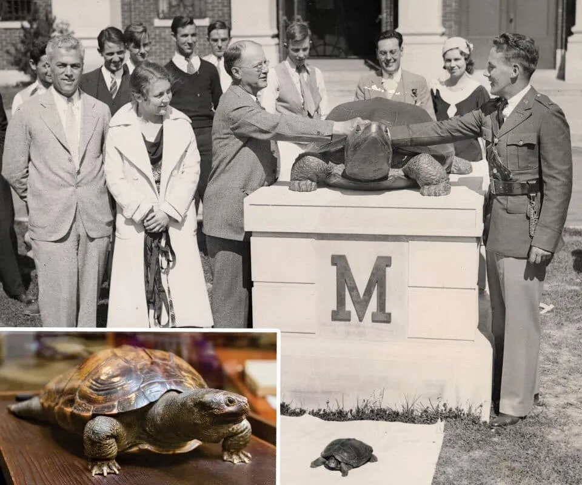
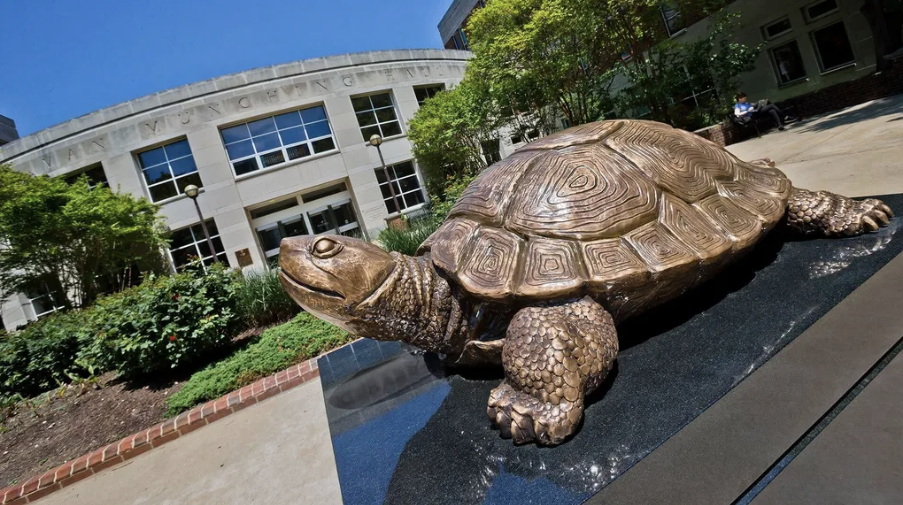
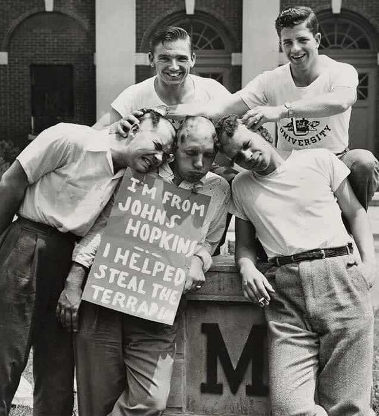
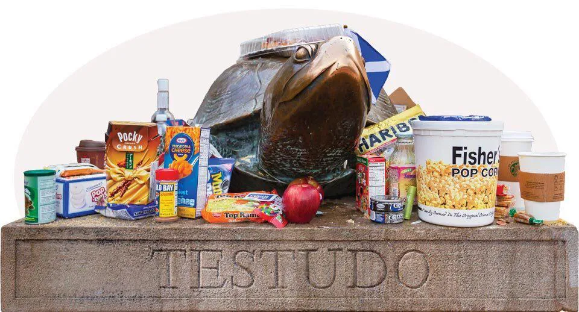
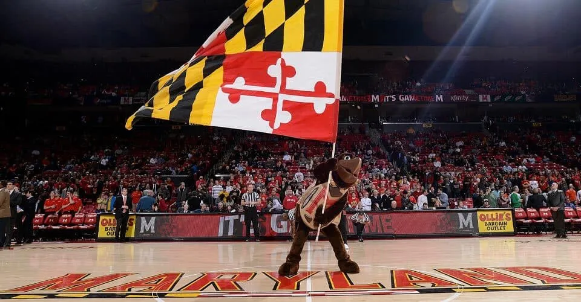
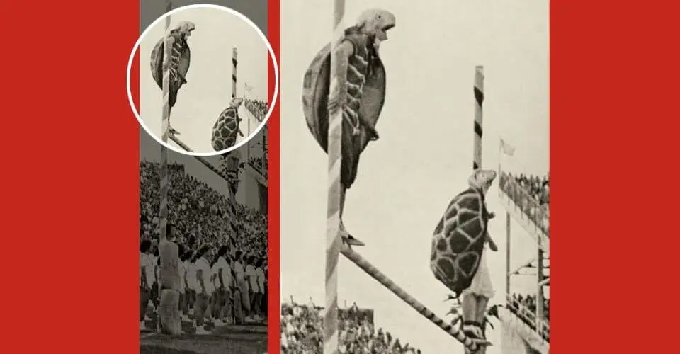
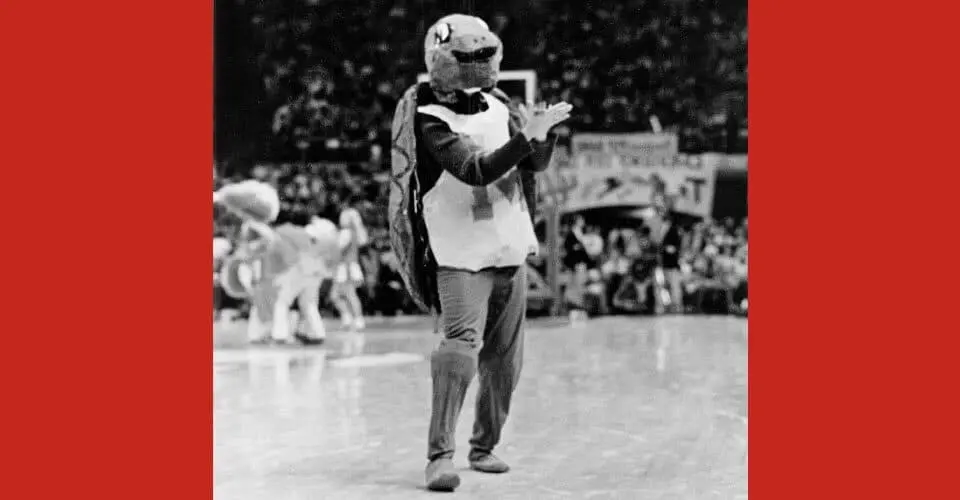
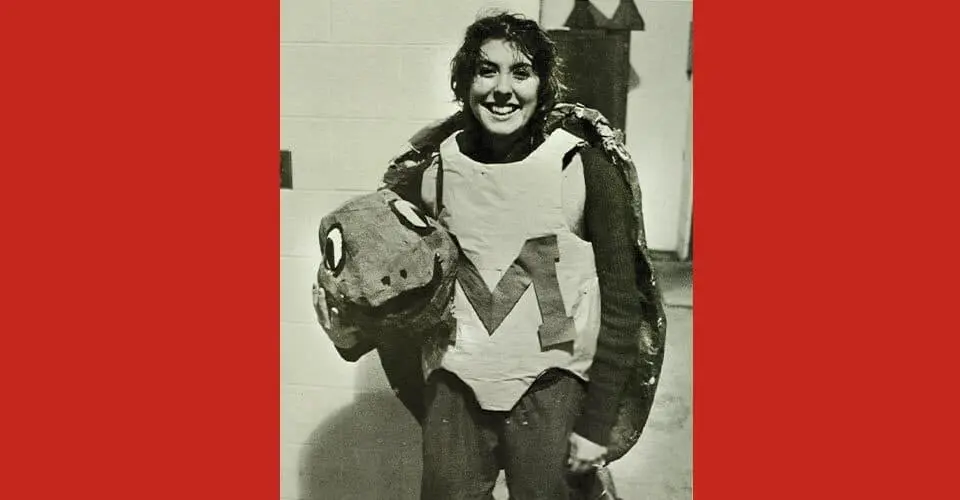
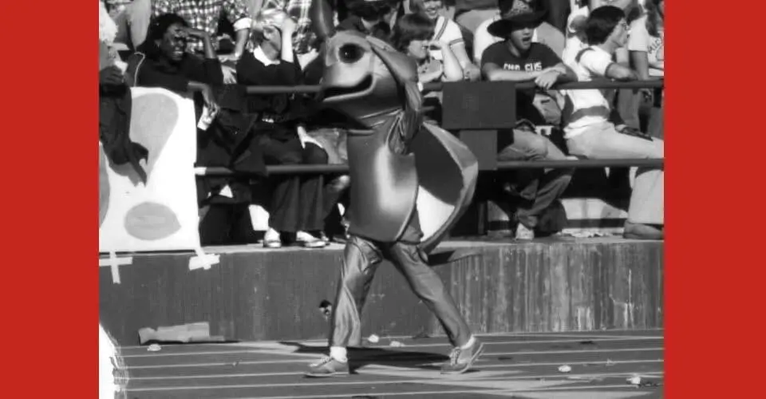
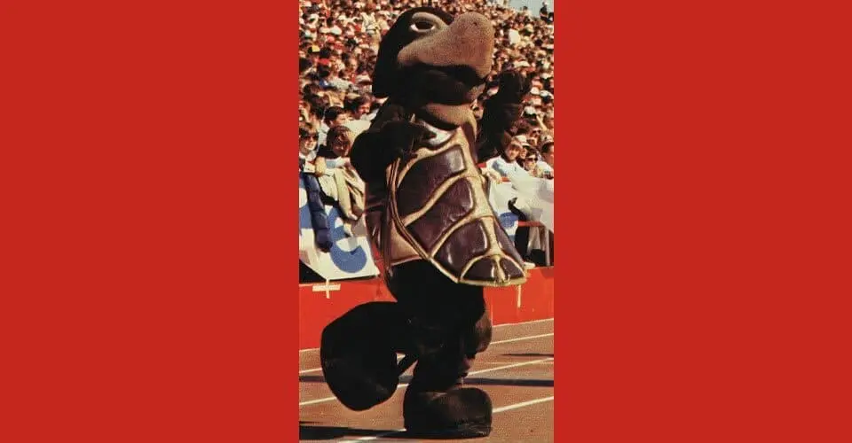

Let’s be honest. A turtle’s an odd choice for a college mascot, up there with Syracuse’s Otto the Orange, UC Santa Cruz’s Sammy the Slug and Stanford’s Tree.
Turtles are slow. Most aren’t big, strong or intimidating. They can’t leap, mountain lion-like, out of a tree to maul you, or crack you one across the noggin with a shillelagh—and really, is that a bad thing?
Instead, these can-do reptiles impress with their positive attributes: They’re persistent and tough. Diamondback terrapins scream (as if turtles make a lot of noise) “Maryland pride” in a state where residents don scarves, overalls and even suits in the flag’s colors.
The University of Maryland loves its Testudo, in every form the mascot takes. He’s the gravitas-heavy, inspirational bronze sculpture that students make offerings to during finals. He’s the furry goofball that dances in the student section at football games, that wears a yellow rain hat and poncho with adorable panache. He’s the logo on our hoodies, the pin on our lapels.
He’s at the center of UMD’s most treasured traditions. And he might have originally been a she.
Testudo has evolved in more ways than one. With the help of University Archivist Emerita Anne Turkos, we delve into our mascot’s muddy origin story, his role in an outrageous, yearslong prank war and his wackiest iterations.
“There are few things I enjoy talking about more than Testudo,” she says. “There’s no mascot quite like him, and he’s had quite a history.”
A Symbol Emerges
Millennia before “Terp” became a Maryland moniker, it was on the region’s menu. Bountiful and easy to catch, the terrapin provided sustenance to Native Americans; once it made the Colonial culinary cut, you could find it roasted, poached and stewed with cream and sherry. By the early 20th century, the hero of these dishes was so popular that the species faced extinction.
In 1932, 11 years after he christened the student newspaper The Diamondback, then-Vice President Harry Clifton “Curley” Byrd lobbied for the reptile (scientific name: Testudines) to serve as the university’s mascot—and replace student-athletes’ identity as the Old Liners.
When the Class of 1933 proposed a terrapin statue for its class gift, Byrd arranged for a diamondback to be plucked from the waters of Crisfield, Md., to serve as a model.
Named the “Archbishop” by students (and assumed to be male—although a 2018 analysis suggests it may indeed have been female), the 13-inch terrapin traveled by train to Gorham Manufacturing Co. in Rhode Island with the student government association president. There, sculptor Aristide Cianfarani designed a giant replica in bronze, which Gorham cast.
Archie returned to campus, but her—or his?—fame was short-lived. The terrapin died days after two holes were drilled into its shell to fashion a ribbon pull for the elaborate (and slow) unveiling of the 5-foot-long likeness at a ceremony in front of Ritchie Coliseum. The likely cause: stress and the hot weather. (Drilling the holes, it was determined, did not hurt the terrapin.)

7 Bronze Testudos on Campus
The newest (here), which debuted in 2018 outside of Van Munching Hall, is the only one not made from a mold of the original.

Testudo has taken lots of unique forms on campus, whether in a walking path or as a topiary. Take our quiz to find them all at today.umd.edu/wheres-testudo.
Terrapin Travails

Who would have guessed a 300-pound bronze statue was so portable? And yet, the shiny new mascot was pulled from his pedestal just before the first anniversary of its installation. The turtlenappers brazenly painted “J.H.U.” in green on the now-empty perch, the first in a trail of “clues” that led UMD to the sculpture outside a Johns Hopkins University dorm the very day it went missing.
It was just the first of Testudo’s 12 disappearances in 15 years, The Diamondback reported in 1958. Some pranks were linked to the UMD-Hopkins lacrosse rivalry, but Georgetown, George Washington and even Loyola University of Maryland students pitched in as well; at their most ambitious, the thieves took the turtle on unsanctioned trips to the University of Virginia and, according to rumor, as far away as Florida.
A 1947 caper, in which Hopkins students buried Testudo in Baltimore, ended with a riot and arrests (and reportedly, an eventual party) after UMD partisans stormed a residence hall at the Homewood campus.
Fed-up UMD administrators packed the statue away in storage for a few years after that. He was then installed outside the new football stadium in 1951—far from getaway-friendly Route 1 and now filled with hundreds of pounds of concrete to prevent further attempts. Then, in 1965, Testudo moved to its permanent (and most visible, theft-deterring) home outside McKeldin Library.

Final Offer(ings)
Besides rubbing Testudo’s nose for good luck, students have left offerings to the statue outside McKeldin during finals week in hope of earning good grades since the 1990s. Like turtles themselves, the tradition has evolved, as gifts of pocket change, notes and flowers turned to beer cans and coffee cups.
In more recent years, Terps’ offerings looked more like pranks, including a life-size cutout of Pope Francis, a toilet and stolen traffic cones; a fire even broke out in the pile in 2013.
Last semester, a coalition of student associations appealed to Terps’ goodwill, encouraging students to instead drop off donations of nonperishable foods for the Campus Pantry at his pedestal.
Suited for the Role
The furry, funny Testudo mascot is the Terps’ top cheerleader. He cartwheels on the sidelines, shakes his turtle tush on viral TikTok dances and poses for selfies with fans. But he didn’t always look this way (and definitely didn’t have these moves).

Since then, dozens of men and women have donned the costume, including Grant Handley ’22, M.P.P. ’23. He shells out what it takes to be Maryland’s mascot:
BE EVERYWHERE (BUT NO OVERLAPS!) Testudo’s a busy turtle, greeting families during move-in, high-fiving kids during Maryland Day, hobnobbing with the governor during announcements and, of course, attending sports games. But he’ll never be in two places at the same time.
THINK ON YOUR FEET “A mascot should never be standing around—they should always be miming or reacting to something,” says Handley, who uses props and improv to perform at all times. That includes dealing with difficult opposing fans: “You have to figure out how to defuse that situation.”
KEEP IT MOVING “We joke that you have to be in ‘mascot shape,’” says Handley. The suit weighs at least 30 pounds—the head is the heaviest part—so the four or five students on the team each year always have to hit the gym.
DON’T SPILL THE BEANS Team members have to keep their identity a secret from everyone, and they can’t speak or show any skin. (The Oregon Duck’s head falling off at a game last fall was “nightmare fuel,” says Handley).
BE CONFIDENT—NOT COCKY Testudo’s known for his one-handed chest pound, but he’s not an in-your-face mascot. “He might grab someone’s hat and dangle it in their face. And when children come, he’ll get low so he’s not intimidating,” says Handley. “He’s a friendly, lovable turtle.”
How Testudo has evolved over the decades
The first known photograph of a Testudo mascot was in 1951, when Zeta Beta Tau members perched on goalposts in masks, shells and street clothes. By the end of the decade, ZBT mascots were banned for being “costumed poorly” and acting “in a disorderly fashion,” The Diamondback wrote.

Versions from the next two decades still looked MacGyvered: papier-mâché heads, wool gloves, Converse sneakers—while others were alarmingly shiny and green.
There was even a Testudinette in that era, and today, women are a regular part of the Testudo crew.



The turtle we know and love today took shape in the early 1980s, with a brown plush suit and shell and a red M across the chest.
